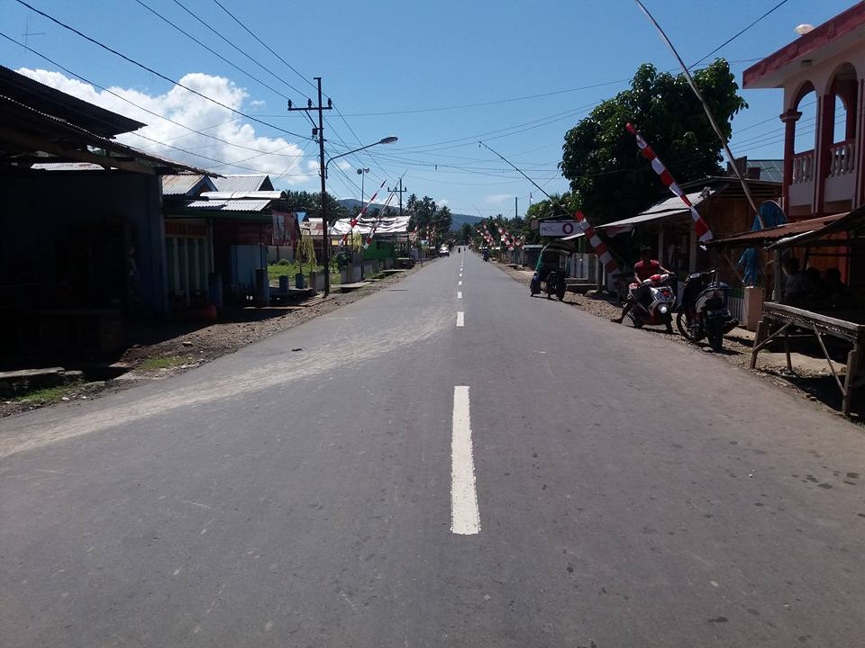

Desa Buyat 2 Saat Lebaran Ketupat
 Desa Buyat Dua adalah desa hasil pemekaran dari Desa Buyat pada tahun 2007 Desa Buyat Dua Mempunyai latar belakang yang sama dengan Desa Buyat yang terletak di ujung selatan Bolaang Mongondow mulai dikenal pada tahun 1897 walaupun diperkiraan wilayah ini sudah di diami sejak abad XVIII dengan nama Buyat. Buyat dalam arti bahasa Mongondow yaitu sisa-sisa makanan yang melekat atau tertinggal di gigi manusia menurut sejarah bahwa yang memberi nama adalah seorang Bogani Bolaang Mongondow yaitu Baay Dowu’ . Baay Dowu’ ini datang dari Totabuan Bolaang Mongondow, mengembara di Bolaang Mongondow Selatan dalam sejarah Baay Dowu’ terakhir mendiami salah satu tempat yaitu lereng gunung Mandili di tepi sungai pada saat Baay Dowu’ selesai makan dia makan dia mengambil kulit pinang untuk dijadikan sikat gigi kemudian dibuang ke sungai dan dibarengi dengan perkataan Bahasa Mongondow yaitu : Tubig tama’a pinolombuankan kon kulit mama’an pinodaritku kon bagang yo tangoyonku tubig in Buyat topi’mangol booyuon intua mobuka’ kon lipu’ (tolindon) yo tangoyan Buyat badia’ kodaitan in rijiki. Artinya Kulit pinang ini saya gunakan untuk membersihkan sisa-sisa makanan, saya buang atau dilemparkan ke sungai dan sungai ini saya namakan Buyat dan kalau sebentar ada orang yang membuka perkampungan di wilayah ini harus dinamkan kampung Buyat agar tidak kehabisan rejeki.
Desa Buyat Dua adalah desa hasil pemekaran dari Desa Buyat pada tahun 2007 Desa Buyat Dua Mempunyai latar belakang yang sama dengan Desa Buyat yang terletak di ujung selatan Bolaang Mongondow mulai dikenal pada tahun 1897 walaupun diperkiraan wilayah ini sudah di diami sejak abad XVIII dengan nama Buyat. Buyat dalam arti bahasa Mongondow yaitu sisa-sisa makanan yang melekat atau tertinggal di gigi manusia menurut sejarah bahwa yang memberi nama adalah seorang Bogani Bolaang Mongondow yaitu Baay Dowu’ . Baay Dowu’ ini datang dari Totabuan Bolaang Mongondow, mengembara di Bolaang Mongondow Selatan dalam sejarah Baay Dowu’ terakhir mendiami salah satu tempat yaitu lereng gunung Mandili di tepi sungai pada saat Baay Dowu’ selesai makan dia makan dia mengambil kulit pinang untuk dijadikan sikat gigi kemudian dibuang ke sungai dan dibarengi dengan perkataan Bahasa Mongondow yaitu : Tubig tama’a pinolombuankan kon kulit mama’an pinodaritku kon bagang yo tangoyonku tubig in Buyat topi’mangol booyuon intua mobuka’ kon lipu’ (tolindon) yo tangoyan Buyat badia’ kodaitan in rijiki. Artinya Kulit pinang ini saya gunakan untuk membersihkan sisa-sisa makanan, saya buang atau dilemparkan ke sungai dan sungai ini saya namakan Buyat dan kalau sebentar ada orang yang membuka perkampungan di wilayah ini harus dinamkan kampung Buyat agar tidak kehabisan rejeki.
Desa Buyat 2 Dari Arah Selatan
Penduduk :
Pada awalnya penduduk Desa Buyat Dua adalah Etnis Minahasa, Sanger Gorontalo akan tetapi penduduk Desa Buyat Dua adalah Etnis Mongondow.
Bahasa :
Desa Buyat Dua yang berbatasan langsung dengan Kecamatan Ratatotok Kabupaten Minahasa Tenggara memilik bahasa yang majemuk dan beragam namun bahasa asli Desa Buyat Dua adalah Bahasa Mongondow dan yang digunakan sehari-hari itu bahasa melayu atau bahas daerah manado.
Agama :
Penduduk Desa Buyat Dua mayoritas penganut agama Islam yang sangat menghormati agama yang lain dikarenakan ada juga sebagian kecil penduduk yang beragama lain dan hal ini sangatlah dijaga terutam segi keamanan yaitu saling menghormati.
Masyarakat Desa Buyat sangat ramah, bersosial dan memiliki sikap toleransi yang tinggi. Hal ini dapat dibuktikan dengan beragamanya agama yang ada di Desa Buyat, baik Islam dan Kristen namun mereka saling bersosialisasi, berkumpul bersama dan saling toleransi satu sama lain.